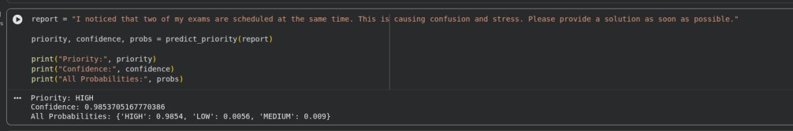
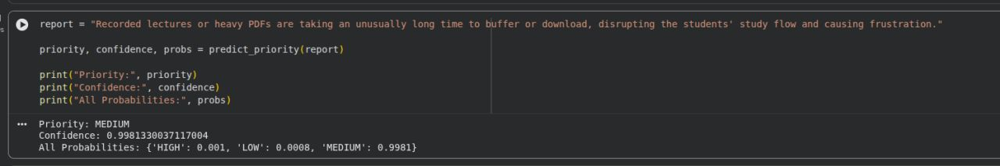
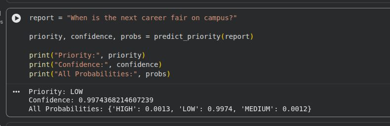

Semantic Priority Analysis – LMS Support Triage
AI-powered triage system for smarter support prioritization.
A practical machine learning workflow that classifies student support reports into high, medium, and low priority so urgent issues reach staff faster.
- DistilBERT embeddings for semantic intent detection.
- XGBoost model for reliable priority scoring.
- Insights on priority distribution and ticket themes.
Python
DistilBERT
XGBoost
NLP
Scikit-learn
Project Snapshot
- Goal: auto-triage LMS support reports by urgency.
- Data: 1005 student reports with metadata.
- Labels: rule-based, zero-shot, synthetic augmentation.
- Models: LR, SVM, Random Forest, XGBoost, Gradient Boosting, DistilBERT.
- Deliverable: prediction function with saved DistilBERT artifacts.
Priority Results
Training output snapshots showing how the model classifies high, medium, and low priority reports.

High priority
Medium priority
Low priorityWhy It Matters
Prioritization reduces delays for urgent requests and improves staff response time, allocation, and student experience.